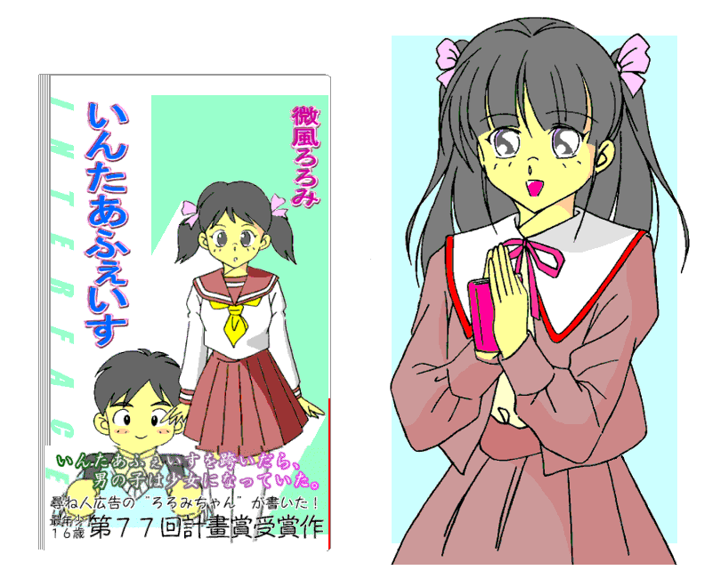

|
《 ――そんなこんなで計畫賞の授賞式、あたしのデビュー騒動の総集編って感じで、とにかくまあいろいろありました。けど、終わりよければすべてよし。 学校の現代文の先生にも、式の様子をしっかり報告しておきました。これこそ生きた文学史だって、先生すっごく喜んでたな。何十年か後の国語の教科書に「微風ろろみはこの授賞式で、当時大御所であった竹下いばらからも注目された」なんて載るのかな……自意識過剰っ！ さて次なるあたしの大型ミッションは、『いんたあふぇいす』の単行本発売とサイン会でした。 思えばあたしもデビュー前、絵崎たるとさんのサイン会に行ったことがあります。でも参加したんじゃないんです。絵崎さんを、握手する参加者たちの背中ごしに見ただけ。今だと信じてもらえなさそうですけど、あたしもあの頃はシャイでした。当日には整理券配布が終わってた、って理由もありますけどね。そんな絵崎さんも、今じゃ学校の先輩だったりします。 で、自分もアイドル作家になったらああいうサイン会やりたいなってずっと思ってましたから、願いが叶って大感激なのです。 ところが、計画書店の営業の人と文藝計畫編集長の正世さんとあたし、打ち合わせの三者面談のときです。正世さん、「いろいろあったから中止してもいいんだよ。これが最終確認」って言うんですよ。だけどね、営業さんもいるのに「止めたい」なんて言えないじゃないですか。それにねあたし、困難を乗り越えて成長していく様をファンのみなさんにお見せするのも、アイドル作家としての微風ろろみらしさだって思うわけ。だから「やりますっ！ ぜったいっ！」って机バンと叩いて言っちゃいました。 そうしたら正世さん、「ほらね、この子の迫力、言ったとおりでしょ」なんて営業さんに言っててさ。あたし、ものの見事にノセられたってわけ。 サイン会前日は書店の控え室でサインペン武器に『いんたあふぇいす』単行本と五百冊一本勝負。ていうかあたし、自分の単行本がこれだけでーんと並んでるの見るのこれがはじめてでした。結局二時間かけて終了。大勝利だけど手は凝りまくりでした。だけどこればっかりはワープロソフトじゃできないものね。 サイン会当日、並んでてくださった方々がほとんど大人の男の人たちだったんで、ちょっと圧倒されて、頭がクラッときちゃって。正世さんの「中止しよう」ってのも心遣いだったんだなって少しはわかりました。でもここまできたからには後悔なんてしてません。ろろみスマイルです。ちゃんと両手で本を手渡して握手したからね。するとあたしの心境も変わってきて、大人の男の人ってなんか頼りがいがあっていいなって思えてくるんです。 そんな中で、あたしと同じくらいの中高生の子がちらほら並んでいるとやっぱりリラックスしちゃいますね。学校のお友達も来てくれて大感激。 ところがここでもハプニングがありまして、なんとサイン本の数が足りなくなっちゃったのです！ やっぱり中止かとざわめく舞台裏。でもあたしは言い切りました。「お客さんの目の前でサインしてあげればいいでしょう！」って。やっぱりサイン会はこのほうがいいよ。もうファンのみなさん大喜び。あたしの手に再発した凝りを、力いっぱい握ってほぐしてくれました。 ほんと、ワープロソフトじゃできないことって、あるんだなあ。》 連載コラム『微風ろろみのフツーの女子高生日記』第一回～ワープロソフトじゃできないこと。～ （少女ファッション誌『Ｋ－ｔｅｅｎｓ』（計画書店発行）所載）より。 |
|
「こんにちは。お久しぶりです」 伸一郎は鋼鉄の扉にゆっくりと体重をかけながら、今ある自分の原点たる実験室へと顔を覗かせた。 「おおっ、来たかろろみちゃん。おめでとう」 「授賞式おつかれさま。これで名実共にアイドル作家だね」 実験室に入ってきたのは伸一郎ひとりだというのに、教授やユウたちスタッフは「ろろみちゃん」と連呼する。 「も、もうっ。変なこと言わないでください。俺は俺ですよ」 伸一郎は手の平を突き出して否定する。だがそのポーズや言葉遣いにも、もうひとつの姿からの干渉は隠せなかった。 Ｐ伸一郎が身体検査を受けた後、ポータブルスプリッターを使うと、伸一郎の傍らにろろみが出現する。 制服姿のろろみの手には、まるくふたつ折りされたＡ３版くらいの厚紙が一枚。スプリット前のＰ伸一郎は持っていなかった紙だ。 「はいっ。間違いなくあたしが受賞したんですよ」 ろろみが両手に持って広げた厚紙に見入るスタッフたち。紛れもない計畫賞の表彰状だ。 「間違いなく」の一言と屈託のない笑顔が、授賞式でのスキャンダル騒動を乗り越えて名誉を守り抜いた達成感を物語っている。 「あらためて、ろろみちゃんおめでとう」 実験室のスタッフ一同が拍手した。伸一郎も一緒に手をたたいた。ろろみは大きく一礼して、にっこりろろみスマイルを見せた。 「ありがとうございます。すべてはここのみなさんのおかげです」 「ろろみちゃんも初めと比べると素直になったねえ」 「女の子が板に付いたんだろ」 「もうリンクアップなんかしないで、この姿でずっと生活したら？」 ろろみを前に、教授たちスタッフはいつも以上におだての言葉を並べ立てる。 「あ、あのっ、変なこと言わないでくださいよ、もう」 そう反応したろろみの仕草は、さっきのＰ伸一郎とそっくり。 「質量源、四二五三三．八二二一グラムの減少が確認されました」 大型スプリッター脇に駆け寄った優一郎が計器の目盛りを読み上げる。 「うむ、正常値の範囲だな」 教授が頷いた。この減少した質量がろろみの体重に相当するのだ。もちろん、服装や所持品を含めての値だが。 「よし、反射シート無しでもスプリットは正常だ」 「もう一度おめでとうだな、ろろみちゃん、シンくん」 脳波を確認するまでもなく、ろろみの人格こそもとのＰ伸一郎であり、スプリット後の伸一郎は別人格のＳ伸一郎なのだ。 「ほんと、リンクアップは便利よ。大切な物を隠すには、ここが一番」 ろろみは筒状にまるめ直した表彰状で、Ｓ伸一郎の体を指した。 変質者集団に襲われたときや授賞式のときは、ここに隠れて危機を脱したのだ。 それにリンクアップはろろみの肉体や着ているものだけでなく、持ち物までも隠してしまう。 「何より頼りになる隠れ処（かくれが）だよな」 助教授と優一郎がそろって言うと、Ｓ伸一郎は顔を赤らめながら当惑する。 ここで優一郎の言葉「質量源」について確認しておこう。 スプリットのときに発生する質量はどこから出てくるのか。それは、大型スプリッターに付属した数千キログラムはある質量源からである。 詳しい原理はここには書かないけれど、スプリットを起こせばスプリット体や持ち物などの分だけ質量源の質量が減り、リンクアップを起こせばリンクアップで消失した分だけ質量が増える。だから、質量源より大きな質量の物体をスプリットさせることはできない。 現在伸一郎が使っているようなポータブルスプリッターもほぼ同じ原理で作動している。異なるのは、質量源は付属しておらず、この実験室の大型スプリッターのものを利用している点だ。ポータブルスプリッターの中に質量源を持たせたら、重くなりすぎてポータブルではなくなってしまう。 そして、初めてのスプリットは重大な意味をもつ。どの質量源がスプリットするときに質量を奪う元となるかが定まり、スプリットする当人の体質も決めてしまうのだから。そのために、初めてのスプリットはポータブルスプリッターでは行なえず、必ず大型スプリッターを使う。 あの日、初めてスプリットした伸一郎は、大型スプリッター内部に生じた異常動作のために、珍しい現象である異体異性スプリットを起こしてしまった。そしてこれが伸一郎のスプリッターに対する〝器量定め〟になったのである。そのため、以後も伸一郎がスプリットするたび異体かつ異性、つまりろろみが出現し、もとの伸一郎の人格はろろみの側に入るようになってしまった。たとえ大型スプリッターの動作が正常に戻っていても。 「反射シート無し」についても補足しておこう。ポータブルスプリッターも改良が進められており、銀色の反射シートを床下に敷かなくとも床の物質を複製することがなくなったのである。ろろみと伸一郎はすでに反射シートを使わずに何度もスプリットを行なっているが、今回は実験室のスタッフたちの目の前で正常動作が確認されたのだ。 ともかく、赤面するＳ伸一郎にろろみはゆっくり目を合わせ、そしてあらたまって言う。 「これからもよろしくね。あたしの隠れ処さん……」 「…………」 Ｓ伸一郎の顔色が落ち着いていく。頷いたように顔をわずかに下に傾け、ろろみの瞳を見据える。 「っていうか、あたしと俺……かな」 「……うん」 息がかかるか、かからないか。 それ以上に近づくのは、まだ。 けれど、ろろみがＳ伸一郎を見上げる視線に曇りはもうない。 優一郎たちスタッフが証人だ。 微妙なふたりのひとりを悩ませる「ろろみと伸一郎の関係は？」という問いに、授賞式でひとつの答えが出た。 しかしこれからは、同じ問いに別の答えを出すことが要求されるのかもしれない。 そんな予感が、ろろみの脳裏をよぎる。 「ところでろろみちゃん、ひとつ質問したいんだけど」 “あたしと俺”の世界が一段落したところで、優一郎がろろみに話しかけた。 「なに？」 「どうして、史枝ちゃんとそんなに親友になったんだい？」 小出史枝とは伸一郎優一郎兄弟のイトコであり、ろろみのクラスメイトでもある少女だ。 「史枝と？ どうしてそんなこと訊くの？」 「えっと……」 優一郎は少し考え込んでから続けた。 「昔はシンに史枝ちゃんよくなついてたけど、今はおたがいごぶさたじゃないか。だから、ろろみちゃんがどうして史枝ちゃんに近づいたのかってこと、興味あるんだ。俺は史枝ちゃん昔から苦手だったから、よくわからないしな」 「うーん、難しいな。……転入したてで緊張してたオレに真っ先に声かけてくれて、すっごく気さくで打ち解けやすかった、っていうのもある。オレのイメージしてた“フツーの女子高生”のいい見本だったから、そういうの教えてもらいたくて近づいたのもある」 言葉遣いと表情が伸一郎のものに戻っていた。自意識の深層を掘り返そうとしたからか。 「なるほど」 「でも、それだけじゃない。この小出史枝って子が本当にあのフミちゃんなのか、確かめてみたいっていう関心もあったんだ」 「確かめてみたい？」 「ユウもわかるだろう。フミちゃんと同じ名前で同い年、遠距離通学ってところも符合する。ごぶさただったあの子と再会してるかもって思うと、気になってさ。だけどこちらの素性は明かせない」 「そうだな。あくまでろろみの立場で接しないとな」 「だから、史枝に接近しながら様子を見ていきたいって考えになって……いつの間にか友達感情に変わっていったんだ」 「史枝ちゃんを観察しているうちに、心も近づいていったってことか」 「で、結局やっぱり史枝はフミちゃんだった。だけどオレもおもしろいんだ。伸一郎のときにフミちゃんと再会したら、久しぶりに逢うイトコっていう気分で接することができたし、ろろみのときは親友として接してるし。うまく切り替えが利くんだよな――怖い出来事の後だと、切り替わらないこともあったけど」 下校途中に変質者集団に襲われたときのことである。 「へえ……それもシンだからじゃないかな。フミちゃんと元々心が通じ合っていたからだって思うな」 「心が通じ合っていた――かも、ね……」 ろろみは少し戸惑いながらも、優一郎に軽く頷いた。 「……わかった。ろろみちゃんありがとう」 「あとね、あたし……」 また口調が変わった。 「なんだい？」 「あたし最近、珠橋さんにも、似たような関心持ってるんだ」 「珠橋せれ菜に？ もしかして、あの子が大空くるみだったから？」 「そう、だと思う。あたしもまだ、自分の中で整理しきれてないけど……」 そんなやりとりをするふたりの脇で、Ｓ伸一郎は教授たちと別の話に興じていた。こちらは「史枝ちゃん」にもせれ菜にも興味が薄いのである。 |
| 「そういやあんた、小池周太郎ってペンネーム使ってなかったっけ？」 思いがけぬ正世の小声の質問に、ろろみの口から二本のストローが離れた。 「はじめて逢ったとき。喫茶店であんたの作品ノートパソコンで見せてもらったね。そのときの作者名だよ。さっき思い出したんだけど」 応接スペースの空気が止まり、ろろみの背中は震えた。 確かにそうだ。“小池周太郎”の名前を正世にも見せていた。 あの授賞式では、小池周太郎の作品とろろみの作品とは別物だということを、ろろみとしての存在を賭けて証明したというのに、こんなところにセキュリティホールが残っていたとは。 「原島たちに見せたときには微風ろろみ名義に直してたから、このこと知ってるのはわたしだけ。――わたしのうろ覚えならそれに越したことはないんだけど」 生憎Ｓ伸一郎も原島も不在。フォローしてくれる人はいない。 しかしすぐにろろみの背中の震えは止まった。赤と白の液体をゆっくりと吸い上げて、大きく深呼吸をしてから口を開いた。 「あたし、確かに作家にはなりたかったけど、作品に自信がなくって……だから名前を隠したくて、シンから男のペンネーム譲り受けたんです」 こうなったときのために答えを考えてはあったのだ。薮蛇になるので自分から言い出すつもりはなかったが、正世のほうから持ち出されたら応えるしかない。 「つまり、小池周太郎というのはもともとシンのペンネームでしたけど、『インターフェイス』を書いたときにはあたしのものになっていたんです」 ろろみの回答を受けても、正世の顔色は落ち着いたままだ。 「自信がなかったのはわかった。けど、どうして男の名前のペンネームにしたの？」 「えっと……ほんと言うとあたし、女の子してるの怖いな、男の子になってみたいな、なんて憧れもあったんです。――だから、デビュー会見のときにも『オレ』なんて言っちゃって……」 今度のはアドリブでひねり出した答えだ。けれども、あのときの自分の心境を思い返せば道理に適う回答であった。 「ふーん、なるほどね。……で、ろろみちゃんは、今でも男になってみたいのかな？」 「さあ……微妙ですね」 ろろみの今の率直な気持ちだ。 そんな調子で、編集部の応接スペースに正世とふたり。トマトジュースと飲むヨーグルト、二個のブリックパックが並んで、ざくろジュースのビンと向かい合っている。 「ただいま編集長。初夏号が刷り上がりました」 「ろろみちゃん、学校おつかれ」 副編の原島が、『文藝計畫』本誌の新しい号を手に持って編集部の扉を開けた。後ろにはＳ伸一郎もいる。 この雑誌は隔月刊なので「○月号」と呼ぶわけにはいかず、出る月ごとに独自の号名がついている。今回の「初夏号」は６月発売の号。２月発売が新春号、４月が陽春号、８月が盛夏号、１０月が秋号、１２月が新年号と呼ばれ、このほかの月には不定期の増刊号として別冊が出ることもある。 そんな初夏号は、ろろみ特集号というべき内容だ。まず口絵には有名カメラマンの手によるろろみのグラビア写真。ベテラン男性作家・綿貫潤二との対談もある。そしてろろみの計畫賞受賞第一作、短編『マルチプライア』も緊急掲載されている。 《 「オレがジブンでジブンもジブン」 「ジブンがボクでボクもボク」 ボクとジブンが向き合って言った。 ボク。ヒロイン。 ジブン。ドウセイシャ。 ジブンは幼稚園まで大阪育ち。小学校からこっちだから大阪弁はもうめったに出ない。けどボクのことジブンて呼ぶのだけは大阪弁の名残り。 「はあいそこのジブン」てジブンにナンパされたとき、「ジブン」が「アンタ」の意味とは知らなかったけど、反射で「なあにジブン」と返事した。以来ボクはジブンをジブンて呼ぶ。ジブンはジブンをオレて呼んで、ジブンはボクをジブンて呼んで、ボクはボクを――もちろんボクに決まってる。 付き合い始めたばかりはこんがらかって。変えようとも言ったけど、ジブンは頑固。 「オレにとってジブンはジブン。これ変えるんなら別れる」て力説するんで引き下がり。そして今ではすっかり慣れた。 かくしかで、ボクとジブンがいっしょに暮らしはじめて二ヶ月。 ある朝目覚めるとアラームはまだお眠り中。つられてもうひと寝入りと思ったら、横に寝ているモノに違和感あった。 あれれボクが寝てる。えっこれってなに。目の前にボク。パジャマもボクの。ならボクのほうはどうよ。あわてて鏡見た。ボクはボクだ。そしてジブンが見当たらぬ。 勝手に結論、ジブンもボクになったにチガイない。 ボクは隣のボクに蹴りを入れ。 「ジブン、起きる」 「ふあああ」 「アンタはジブンよね」 「ああ、なんだぁ」 「アンタ、体ヘンだと思わない？」 「はあ、んーと、ちょっとだるくて胸がきついような」 「それがヘンだっていうの」 「んっ……ぐはあっ！」 ジブン、ここで我に返る。自分がボクになってるって、やっとわかったみたい。 そしてボクらは向き合って、オレがジブンでジブンもジブン、ジブンがボクでボクもボク。 小一時間のたうちまわった末、落ち着いたとこで思いつき。 「ジブン、ボクの替わりに学校行ってよ」 今から出ればまだ間に合う。 「へ？ オレのバイトどうするのさ」 「バイト一日休んだって問題ないでしょ。先月皆勤だったし貯金あるんだし。ボクは三日連続で無断欠席よ。そろそろ学校出ないと親元に連れ戻されちゃう」 「ならジブンが代わりにバイト出てくれよ」 「無理。ボクはジブンの姿じゃないんだもの。ボク寝てる」 「そんな殺生な。無理だよいきなり女子高なんて」 「なあに適当にボクらしくふるまえばいいの。ちょっとくらいヘンでもみんな気にしないんだから。もう二十三でしょジブン」 「この体は十六だろう！」 「言い訳しない。ほらブラウスから着る着る。次スカート。足上げて。そうそう」 ともかくジブンにボクの服着せる。うんうん様になってる。なのにジブンはしおれた顔で。 「十六ていうのになんで制服似合わねえんだ」 「ジョシコーセーに夢見すぎ！」 むかついた勢いでジブンをバス停まで引きずって、学校行きのバスに押し込んだ。 いつものようにウチの制服で車内はギュウギュウ。顔見知りもいたかもな。 もしかして、ジブンのボクでないボクのボクが私服で外にいたのに気付いたか。 でもボクに双子がいてはいけない法則はない。家庭の事情だと勝手にナットクしてくれるだろう。きっと。 ジブンのボク、車内でおろおろしてるかな。そんな挙動のボクもクラスうけするかも。》 「ジブン」が「ボク」と同じ姿に変わってしまった初日。そして次の日は二人、その次の日は四人と、世界中の人々が倍々ゲームで「ボク」と同じ姿に変身していく。しかし世間はさして驚かず、いつもと同じ日々を繰り返す――というストーリーである。 「原稿もらったときにも言ったけど、ろろみちゃん大胆に文体変えたねえ」 正世が『マルチプライア』の載っているページを開いて見せる。 「はい。文体が固いとか指摘されて、ちょっと凹みましたから」 「今思うと珠橋せれ菜くさい気もするね、軽薄ぽいところが」 「正直言いますと、彼女の文体を少し参考にしました。今風のアイドル文学はこういうものだろうなって」 「そりゃわかるけど、ろろみの持ち味ってなんなんだろうなって」 「…………」 さすが編集長、手厳しい。 「ですけど、いろいろな手法に挑戦してみるのはいいことだと思いますよ。とくに若いうちは」 「原島黙れ」 背後からろろみをフォローしようとする副編を、正世はピシャリと止めた。そして、穏やかな口調で続けた。 「……意地悪言ってゴメン。あの子よりは落ち着きが見える文章だから、ろろみの持ち味はきちんと出てるよ、問題なし。これからもがんばって」 「あっ、おそれいります」 そんな正世からの評はともかく、ろろみはあらためて考える。 『マルチプライア』は、ろろみがろろみとして書いたほんとうの意味でのろろみの第一作だ。スプリットを経験する前の伸一郎が書いた作品とは、違っていて当然。 ならばやっぱりあの秋川修司の言ったとおり、『いんたあふぇいす』をろろみの作品とするのは間違っていたのだろうか。――その件は考えないでおこう。 「でもさ、ろろみちゃんと小出くんも『マルチプライア』だね」 ろろみの思索に後追いするかのように、正世が一声かけてくる。 「えっ？」 「授賞式でせれ菜たちに反論していたときの小出くん、まるでろろみちゃんと一体に見えた。姿じゃなくて心が『マルチプライア』してたみたい」 正世や原島はＳ伸一郎とはよく逢うがＰ伸一郎とは逢わない。だから、あのときの伸一郎がいつもと違うと思っても不思議はないのだ。 近くの机で作業中のＳ伸一郎に目を向けるも、気付いてないのか反応はない。 「そうそう、珠橋さんついでに、いつかの宿題の答え合わせをしませんか？」 ろろみは話題を逸らした。 「――ご名答。『ＢＵＫＡＮ』まで読んだんならもう十分ね」 「じゃあ、大空くるみがどうしてタブーになったのか教えてもらえますか？」 「いいよ。――ろろみは寺橋光源（てらはし こうげん）は知ってるよね」 「中堅どころの男性作家さんですよね。この間一冊読みました。……あー、あたしに酷評したあの作家さんですか。新星文學新人賞の選考委員で珠橋さん贔屓の」 「そう。寺橋光源は文壇の政治力も強いけど、芸能事務所にも顔が利いてね。せれ菜を鈴薔薇プロダクションに入れてマネジメントさせたり、洋陵大学に合格させたのも彼の力だってよ。同じ鈴薔薇プロ所属の下斗米アリカが映画『少年少女少年』の主演なのもその関係だね」 「なんか、ちょっと悔しいです」 「そこです、ろろみちゃん。重要なのは、彼がどうしてせれ菜贔屓なのかですよ」 正世に代わって原島が続けた。 「はっきり言ってしまえば、寺橋とせれ菜は愛人どうし。珠橋の橋の字だって寺橋から一文字取ったそうですし。寺橋の自宅に通うせれ菜の姿、あちこちの週刊誌が写してるんですけど、寺橋と鈴薔薇プロの力でみんな握りつぶされてます。せれ菜が大空くるみだったってことも、寺橋の手によるせれ菜のプロモーションに邪魔だからって、マスメディアからは抹殺されているんです」 「どうしてです？ 元アイドル歌手だっていいじゃない」 「アイドル作家として売り出すときに、元Ｃ級アイドル歌手という経歴はかっこ悪いんでしょう、きっと」 ろろみにも少しはわかる。フリーターでライトノベル作家志望の二十五男という経歴は、アイドル作家微風ろろみにはかっこ悪い。 けれどもこちらは完璧に隠すことができる経歴だ。それに、表に出したところで信じてもらえない可能性が高いし、出すことは許されない。せれ菜とは事情が違う。 「それでもやっぱり……元みらーじゅの大空くるみで構わないって思いますよ、あたしが珠橋さんなら」 結局、ろろみには共感できないのである。大空くるみと間近で心を通じ合った――互いに不本意な形であるが――Ｐ伸一郎の立場としても。 「でもね、最近は情勢が変わりつつあるみたいよ」 正世が談義に復活した。 「これ見て。今月号の『近代リテラリ』。寺橋ね、せれ菜の新作にビミョーな評価つけてるから」 正世の取り出した雑誌のレビュー欄に目を通してみる。確かに寺橋の『軟派動物学如論』評は、愛人のものにしては手厳しい。 「『プレッシャーに負けたのか』『前作に比べるとノリきれてない』か」 「『アイドル作家はせれ菜だけなのか？』だって。あっ、あたしの名前も出てる」 ほかの作家はせれ菜に好意的なレビューなのでなおさら気になるのだ。 「それとね、せれ菜と下斗米アリカも不仲みたいよ」 「あー、それでですか。映画『少年少女少年』がなかなかクランクインしないのは」 正世と原島の会話は、芸能ネタに疎いろろみをいつしか置き去りにしていた。 そして、授賞式の回想へと入る。 「あのときのろろみちゃ……微風先生が、僕にはアイドル歌手のコンサートのアンコールに思えました。それもデビューから半年くらいでとんとん拍子に人気を上げて、ホールで開いたファーストコンサートのね」 「へえ、どうして」 「授賞式の最後に一度姿を消して、再び現れたら客席大歓声で、最後のＭＣでは大泣きになって『ありがとうございました』だもの」 いかにも原島らしいたとえである。 「でも本題はこれです。見てくださいよ、『微風ろろみは現代の天照大神だ』そうです」 原島は買ってきたばかりの週刊誌の見出しを読み上げた。 「うわっ、なにそれ」 「…………」 ろろみは沈黙するばかり。こんなふうに称えられるのも慣れっこになったつもりなのに。 「ハプニングで会場から隠れたらパーティーが暗転したけれど、参列者たちの丁々発止の末再び現れたら光が戻ったような大盛り上がり、だそうで」 「すごいねえ。うちの週刊誌だってここまでは書いてないよ」 「田原ヤスロウ先生でしたっけ、『文壇を率いる自由の女神』とか言ってたの。あれより上かもです」 「……あ、あの、だったら、あたしが留守の間にお祝いのスピーチをした絵崎たるとクンは、さしずめアメノウズメってとこでしょうか」 「おっ、いいとこ突きますね」 「…………」 ろろみの口が動きはじめると、今度は正世が言葉少なになった。原島たちに横目を向けるように、ざくろジュースのビンに口をつける。 絵崎たるとの名前が出たせいだろう。 「……編集長、もう冷戦はやめましょうよ。授賞式では絵崎たるとに救われたんですよ。編集長だって彼女と会釈を交わしたじゃありませんか」 「あ、あたしからもお願いします、一作家の身分でおこがましいですけど。たるとクンと仲直りしていただけませんか。あたしもいっしょの雑誌で書きたいんです。――ほら、シンも」 脇で雑用をしていたＳ伸一郎をろろみが小突く。 「へ、俺も？」 「あたしたちの名誉を守ってくれたのよ。恩返ししなくちゃ、ね」 「あ、ああ……俺からもお願いしますよ」 乗り気でないのが丸わかりの棒読みながら、Ｓ伸一郎も正世に声をかける。 するとざくろジュースの液面が止まり、ビンが机の上に戻された。 「原島、だれが冷戦続けるって言ったの。絵崎先生にも短編の原稿依頼してるよ。順調にいけば次の本誌か別冊には載るはず」 「えっ、それじゃ」 「見くびらないで。わたしだって礼儀は弁えてるんだから。ろろみちゃんとの対談もそのうちやらないとね」 「あ、ありがとうございます」 原島とろろみの口が、思わず揃う。 「あんたらはお礼を言う立場じゃないでしょ。それに、編集部への出入りはまだ認めてないんだから」 ろろみはまだ原因を知らないこの喧嘩、まだ完全な和解というわけではないようだ。 いつまでも続くかに見えた談義を終わらせるように、正世の机の上のインターホンが鳴った。営業の人が呼んでいる。原島とＳ伸一郎を残し、ろろみと正世は階段を上がった。 |
| 『いんたあふぇいすを跨いだら、男の子は少女になっていた。』 テーブルに数冊並べて置かれた単行本の帯には、そんなアオリ文句が踊っている。 ランドセルを背負って歩く男の子の影が、呆然と立ちすくむ少女の姿へとつながっていくイラスト。 大書きされた『いんたあふぇいす』のタイトルと、著者名「微風ろろみ」。 『尋ね人騒動の“ろろみちゃん”が書いた』とそのものズバリのコメント。 あらたまったように一階上の会議室に通されて、否応もなくそんな表紙を見せ付けられる。 「あんたの本なんだよ」と、正世が後押しするように囁いた。営業さんが「おめでとうございます、微風先生」と続ける。 作家になったんだ。今更ながらに実感が胸の奥から湧いて出てくる。 雑誌に作品が載ったときにも、会見やその後の取材のときにも、授賞式のときにも思ったことだけれど、今回がいちばん。 「どうもありがとうございます。すごくいい表紙です」 「何度も打ち合わせをした甲斐があったね」 編集部で表紙デザインの打ち合わせをしたときには、ろろみはもっと抽象的なイラストの案を推していたが、正世と原島、さらにＳ伸一郎の主張に折れて、こちらの案を通した。 けれども本になったものを見れば、この表紙でよかったと思う。 自分の描きたかったストーリー世界だけでなく、自分自身の心境を的確に表していて、そして見る人へのインパクトも大きい。 Ｓ伸一郎たちのほうがろろみ当人よりも、この作品をどう売り込むかについてよく理解していたのだろう。  そんな本を囲んで、ろろみは正世、そして計画書店の営業さんと三人、『いんたあふぇいす』発売記念サイン会の打ち合わせに入る。 思えば正世にスカウトされる直前、ろろみは絵崎たるとのサイン会会場に足を踏み入れていた。そのときの感慨もあって、単行本が出たらサイン会をやりたいというのはろろみの予ねてからの希望だった。 しかも会場になる書店はそのときと同じ店。ろろみがそうしてほしいと頼んだわけではないが、奇遇とも言い切れない。こういうアイドル作家のイベントに強い店は数店に限られているのだ。 営業さんの話によると、書店で五百枚用意した整理券がわずか十五分で捌け切ったらしい。さすがろろみ。行列に並ぶ順番はサイン会当日の抽選で決まるので、早く来たから早い順番がとれるわけではないのだが、それでも始発で来店しないと間に合わなかったようだ。 ところが、いよいよ当日進行についての打ち合わせに入ろうとしたとき、正世の口調が不意に優しくなった。 「ろろみ、最後に確認しておくけど、本当にサイン会やっていいの？」 「……どうしたんです、いったい？」 「あんた、コンビニ強盗とか授賞式のハプニングとかいろいろあったでしょう。サイン会なんて不特定多数が集まることやって、怖くないのかなって思って」 「えっ、なに？」 「中止してもいいんだよ。ろろみ当人が顔を出さない、ただのサイン本配り会にするって手もあるよ。どうする？ これが最終確認」 ろろみのデリケートな心に、正世は気を遣ってくれているのだ。計畫賞発表のときの厳しい態度とは大違い。 けれども今のろろみの目には前しか見えていなかった。 営業さんが同席している。もう整理券も配ってしまった。ここで予定を変更すれば、お客さん、書店さん、営業さん、みんなに迷惑をかける。 どんな客が目の前に立つかわからないサイン会に、不安がないわけではない。けれどもろろみはその不安を振り切った。これまで自分は、いくつも困難を乗り越えて成長したではないか。今回もまた、成長する様をファンのみんなに見せよう。それもアイドル作家・微風ろろみらしさではないのか。 ろろみに、アイドル作家としてのプロ意識が根付いていた。 「何言ってるんですか！ やりますっ！ ぜったいっ！ あたしが本配ります。握手もしますから」 机をバンバンと叩く音が、ろろみの熱弁の伴奏になった。 すると正世は大きくろろみに肯いてから、営業さんに顔を向けた。 「ほらね、この子の迫力、言ったとおりでしょ」 ろろみがサイン会を断念するはずがない。それを承知で、正世はろろみをノセようとあんなことを言ったのだ。 「……なんか、正世さんの手の平からは絶対出られないって感じ」 |
（作者からのメッセージ）
こんにちは、こうけいです。
お待たせしました！ 半年以上ぶりに『ろろみ』の新作を投稿できました。
今回（第６話）は区切りごとに「第１回」「第２回」として投稿していく予定です。よって１回が１００キロバイトを超えることはない、と思いたいのですけど。
予定としては、第５回くらいまではいきそうかな……。
単行本『いんたあふぇいす』の表紙には、ＭＯＮＤＯさんからいただきましたイラストを使いました。ありがとうございます。
表紙の右隣にろろみがいる配置も元のイラストそのままです。
ただし、表紙の帯やコピーはわたしがアレンジしたものですけど（ＭＯＮＤＯさんの了解は得ています）。帯のイラストがわざと表紙とずれているあたり、本物の帯っぽく見せているつもりです（笑）
実はこのイラスト、いただいたのはもう２年以上も前のことです。あれからなかなか使う機会（＝ろろみの単行本発売）までストーリーが進まず、ＭＯＮＤＯさんには失礼なことをしていました。
でもようやくここまでストーリーが進みまして、イラストも日の目を見て、なによりです。
ろろみの第２作『マルチプライア』の冒頭部を書いてみました。これも一応、ＴＳものです。
全体のストーリーの構想もできているので、もしかしたらそのうちに、『マルチプライア』を文庫に（例えば「こうけいａｓ微風ろろみ」名義で）投稿することができるかもしれません。
『ろろみ』の作品世界内では、アイドル作家がもてはやされていますけれど、この世界内にもそれをよく思わない人はいます。また、ぽっと出の新人アイドル作家・微風ろろみがブレイクしつつあるのを苦々しく見ている人もいます。
第７話は、ろろみやアイドル作家たち、さらにはアイドル文壇を取り巻く人たちの、足の引っ張り合いやバッシング合戦が何度も起こることでしょう。
ろろみの周囲の人たちの様々な動きを、描けるところまで描きたいというのがわたしの第７話での目標です。
今回は新しい試みとして、アヴァンタイトルの『微風ろろみのフツーの女子高生日記』で、ろろみのサイン会の展開について少々ネタばらしをやってみました。
サイン会の全貌と、ハプニングの真相は？ 第２回にもご注目ください。
□ 感想はこちらに □